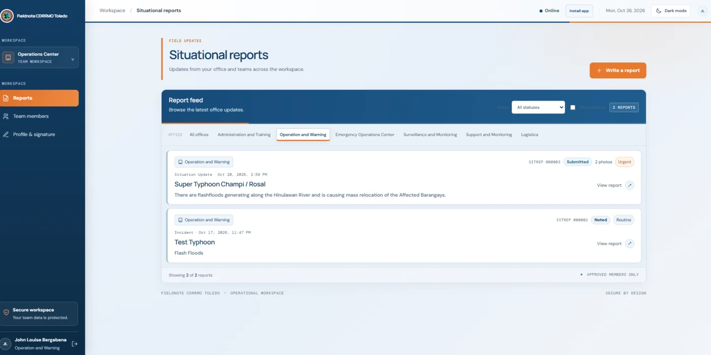

View screenshot
Internal tool
2026
Fieldnote — Situational Report Maker
Toledo City CDRRMO · Operations & Warning
A secure reporting workspace for disaster-response teams. Offices publish situational reports in one place, attach photo evidence, and route updates through a clear review status — so decision-makers read the same picture during an emergency.
- Dedicated channels per office — Ops & Warning, Admin & Training, Logistics
- SITREP numbering with submitted / noted review states and urgency tags
- Photo evidence attachments and structured incident metadata
- Installable app shell, status filters, and approved-members-only access
Internal deployment — walkthrough on request